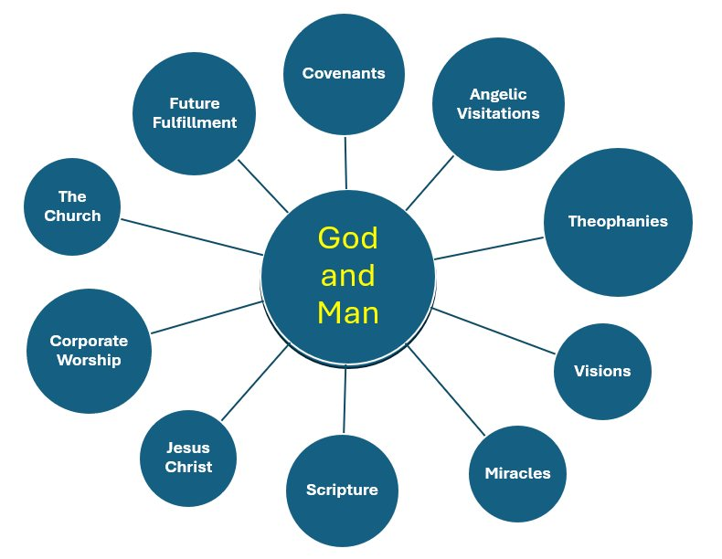

A letter to my BSF Brothers · April 1, 2025 · part of Letters to the Brothers.
This letter turned out to be a seed: a year later it grew into the God Draws Near series.
Happy BSF Day! Another thing that has been in my mind all week is Q9 for tonight’s Lesson: describe how God dwelt with His people in the past, dwells with them today, and will dwell with them in the future. I have enjoyed pondering it and seeing how God has always done everything He can to get close to us despite our sin and disregard for Him. One of my favorite verses is: “Go up to the land flowing with milk and honey. But I will not go with you, because you are a stiff-necked people, and I might destroy you on the way” (Exodus 33:3).
I pondered the Garden of Eden — how God enjoyed being as close to us as possible. How I love the purity and simplicity of God walking with Adam and Eve in the cool of the day. But that all had to change when we decided it would be better if we were God 🙁 Even then God went into action to be close to us. Creating His people (Israel — the Jews). Appearing to the Patriarchs in dreams and visions. Rescuing them and bringing them to, and giving them, the Promised Land. Creating the Tabernacle that would go with them along their journey. The pillar of cloud and fire. Priests. Prophets. Judges. Kings. The Temple. Finally, Jesus (God is with us) and then indwelling us by the Holy Spirit. A beautiful progression where He gets as close to us as He can. Then in heaven it is back to how it should be: His heart and ours intertwined forever.
So, of course, I had to ask AI if my thinking was correct on all of this. AI gave me great results in text — but when I asked it to make text-to-graphics it did not do so well! 😕 My first ‘bad’ experience with AI. Still, here is what it came up with:

And here is the text answer, which was much better — other ways God drew near to His people beyond the ones I listed:
- Covenants. Relational agreements with Noah, Abraham, Moses, and David that demonstrated His commitment and provided a framework for His presence (Genesis 9, 15; Exodus 19:5–6; 2 Samuel 7:12–16).
- Angelic visitations. The angel appearing to Hagar (Genesis 16), Jacob wrestling (Genesis 32), Gabriel announcing Jesus’ birth (Luke 1).
- Theophanies. The burning bush (Exodus 3), the pillar of cloud and fire (Exodus 13), the LORD appearing to Abraham with two angels (Genesis 18).
- Visions. Ezekiel 1, Isaiah 6, Daniel 7 — God revealing His plans and reassuring His presence.
- Miracles. The Red Sea, manna in the wilderness, and healing through Jesus.
- Scripture. God’s Word itself as a manifestation of His presence (2 Timothy 3:16).
- Jesus Christ. The ultimate expression — Emmanuel, “God with us” (Matthew 1:23).
- Corporate worship, the Church, and the future. Communal worship centered on His presence; God dwelling in the body of Christ; and finally: “Behold, the dwelling place of God is with man” (Revelation 21:3).
God’s pursuit of closeness with humanity is a central theme throughout Scripture. From Eden to the Spirit within us to full communion in eternity, He continually adapts to remain near, despite our sinfulness and limitations. — Erv
Comments